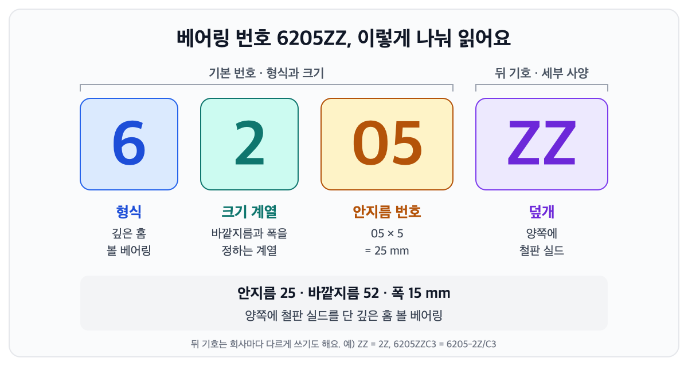

← 글 목록 · 베어링 기초
베어링 번호 읽는 법 — 6205ZZ는 무슨 뜻일까
6205ZZ는 '안지름 25mm짜리 깊은 홈 볼 베어링에 양쪽으로 철판 덮개(실드)를 단 것'이라는 뜻이에요. 맨 앞 6은 베어링 형식, 2는 크기 계열, 05는 안지름 번호(05 × 5 = 25mm)이고, 뒤에 붙은 ZZ는 양쪽 실드를 나타내요. 앞의 네 자리로 형식과 크기를 읽고, 뒤에 붙은 기호로 세부 사양을 읽으면 됩니다.

번호는 일련번호가 아니라 약속이에요
베어링 번호(호칭 기호)는 제품마다 매기는 일련번호가 아니에요. 형식과 크기를 정해진 규칙대로 적은 약속이에요. 그래서 국제 규격(ISO)을 따르는 일반 베어링은 앞부분 번호가 같으면, 만든 회사가 달라도 안지름·바깥지름·폭이 같아요.
도면이나 부품표에 '안지름 25mm 볼 베어링'이라고 쓰지 않고 6205라고 쓰는 이유도 여기에 있어요. 설계하는 사람, 사는 사람, 고치는 사람이 모두 같은 부품을 정확히 알아볼 수 있으니까요.
다만 앞부분이 같다고 모든 게 같지는 않아요. 덮개, 내부 틈새, 정밀도, 케이지, 그리스 같은 세부 사양은 뒤에 붙는 기호로 갈려요. 이 기호를 놓치면 크기는 맞는데 엉뚱한 베어링을 끼우게 됩니다.
앞에서부터 하나씩 읽기
① 6 — 베어링 형식
첫 숫자나 첫 글자는 베어링의 형식이에요. 6은 가장 흔한 깊은 홈 볼 베어링이에요. 자주 보는 형식을 안지름 25mm짜리 번호로 모아 보면 이렇습니다.
| 앞 숫자·글자 | 형식 | 예 (모두 안지름 25mm) |
|---|---|---|
| 6 | 깊은 홈 볼 베어링 | 6205 |
| 7 | 앵귤러 콘택트 볼 베어링 | 7205 |
| 1 | 자동조심 볼 베어링 | 1205 |
| N, NU, NJ | 원통 롤러 베어링 | NU205 |
| 3 | 테이퍼 롤러 베어링 | 30205 |
| 2로 시작하는 다섯 자리 | 자동조심 롤러 베어링 | 22205 |
| 5 | 스러스트 볼 베어링 | 51105 |
| NA | 니들 롤러 베어링 | NA4905 |
② 2 — 크기 계열
둘째 숫자는 크기 계열이에요. 안지름이 같아도 바깥지름과 폭은 여러 가지가 있거든요. 안지름 25mm 깊은 홈 볼 베어링을 나란히 놓아 보면 차이가 한눈에 보여요.
| 번호 | 안지름 | 바깥지름 | 폭 | 단면 |
|---|---|---|---|---|
| 6805 | 25 | 37 | 7 | 아주 얇음 |
| 6905 | 25 | 42 | 9 | 얇음 |
| 6005 | 25 | 47 | 12 | 가벼움 |
| 6205 | 25 | 52 | 15 | 보통 |
| 6305 | 25 | 62 | 17 | 두꺼움 |
| 6405 | 25 | 80 | 21 | 아주 두꺼움 |
(단위: mm)
단면이 클수록 큰 볼이 들어가서 더 큰 하중을 견디지만, 그만큼 자리를 많이 차지해요. 그래서 축 지름이 같아도 기계에 따라 6005를 쓰기도 하고 6305를 쓰기도 해요.
③ 05 — 안지름 번호
- 04부터는 번호에 5를 곱하면 안지름(mm)이에요. 04 → 20mm, 05 → 25mm, 08 → 40mm, 10 → 50mm.
- 00~03은 규칙이 달라서 외워 두면 편해요. 00 → 10mm, 01 → 12mm, 02 → 15mm, 03 → 17mm.
- 안지름이 10mm보다 작으면 마지막 숫자가 곧 안지름이에요. 스케이트보드 바퀴에 많이 들어가는 608은 안지름 8mm예요.
- 22·28·32mm처럼 5로 나누어떨어지지 않는 안지름이나 500mm 이상의 큰 안지름은 빗금 뒤에 그대로 적어요. 예) 62/22 → 안지름 22mm.
④ ZZ — 뒤에 붙는 기호
기본 번호 뒤에는 세부 사양을 알려 주는 기호가 붙어요. 자주 보는 것만 추리면 다음과 같아요.
| 뒤 기호 | 뜻 | 알아 둘 점 |
|---|---|---|
| Z / ZZ | 철판 덮개(실드) 한쪽 / 양쪽 | 먼지를 어느 정도 막고, 회전이 가벼워요 |
| 2Z | ZZ와 같은 뜻 | SKF·FAG 같은 유럽 회사 표기예요 |
| DDU, LLU, 2RSH·2RS1, 2RSR, 2RS | 고무 씰 양쪽 | 물과 먼지를 더 잘 막지만 회전 저항이 조금 커요. 회사마다 적는 법이 달라요 (NSK DDU, NTN LLU, SKF 2RSH·2RS1, FAG 2RSR) |
| C3 | 내부 틈새가 보통보다 큼 | 돌면서 열이 나는 전동기 같은 곳에 흔히 써요 |
| N / NR | 바깥 고리에 멈춤 링 홈 / 멈춤 링까지 달림 | 하우징에 걸어 위치를 잡을 때 써요 |
| P6, P5 | 정밀도 등급 | 숫자가 작을수록 정밀해요 |
그래서 똑같은 베어링이 회사에 따라 6205ZZC3(NSK·NTN), 6205-2Z/C3(SKF)처럼 다르게 적히기도 해요. 회사마다 다른 번호를 맞춰 보는 방법은 '호환품 찾는 법'에서 따로 다룰게요.
번호를 읽는 순서
- 번호를 찾아요. 고리 옆면이나 실드에 번호와 회사 이름이 새겨져 있어요. 기름때를 닦아야 보일 때가 많아요.
- 앞 네 자리로 형식과 크기를 읽어요. 6205 → 깊은 홈 볼 베어링, 안지름 25 · 바깥지름 52 · 폭 15mm.
- 뒤 기호로 세부 사양을 확인해요. 덮개(ZZ·고무 씰), 틈새(C3), 정밀도(P6·P5)를 봐요. 교체할 때는 원래 베어링과 뒤 기호까지 맞춰야 해요.
- 번호가 지워졌으면 재요. 캘리퍼스로 안지름·바깥지름·폭을 재고 덮개 종류를 보면 대부분 찾을 수 있어요. 다만 틈새와 정밀도는 겉으로 보이지 않으니 기계의 부품표를 확인하세요.
- 인치 베어링은 따로 봐요. 미국식 인치 테이퍼 롤러 베어링은 안쪽 부분(콘)과 바깥 고리(컵)에 번호가 따로 붙어요. 두 번호와 치수를 함께 확인해야 해요.
- 마지막엔 치수표로 확인해요. 번호 규칙에는 예외가 있어요. 주문하거나 설계하기 전에는 제조사 치수표로 한 번 더 확인하세요.
현장 이야기
더 알아보기
- 같은 베어링인데 회사마다 번호가 달라요 — 호환품 찾는 법 (준비 중)
- 볼 베어링과 롤러 베어링, 무엇이 다를까 (준비 중)
- 준비 중인 베어링 공학책의 '주요 치수와 호칭 기호' — 치수 계열과 정밀도 등급, 인치 베어링까지 더 자세히 (출간 준비 중)
이 베어링 찾으세요?
번호나 사진만 보내 주세요. 번호가 지워진 베어링도 치수로 찾아 드려요.
이 베어링 찾으세요? 번호나 사진만 보내 주세요.
견적 문의하기